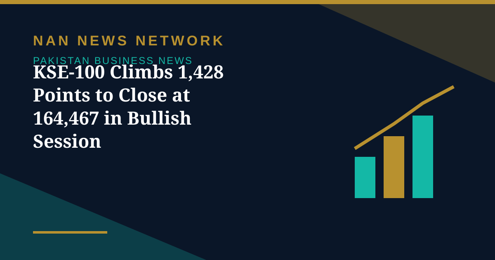

KSE-100 Climbs 1,428 Points to Close at 164,467 in Bullish Session

The benchmark KSE-100 Index of the Pakistan Stock Exchange continued its bullish momentum on Tuesday, gaining 1,428.73 points, a positive change of 0.88 percent, to close at 164,467.20 points against 163,038.47 points recorded in the previous trading session, Associated Press of Pakistan reported.
The ready market witnessed a trading volume of 401.969 million shares, compared with 376.019 million shares traded in the previous session, while the traded value increased to Rs18.069 billion from Rs16.192 billion. Market capitalisation increased to Rs18.214 trillion from Rs18.061 trillion recorded a day earlier.
Breadth and leading stocks
Out of 497 companies that traded in the ready market, 282 posted gains, 170 suffered losses, while 45 remained unchanged. K-Electric Ltd led the volume chart with 54.027 million shares, followed by Cnergyico PK with 30.699 million shares and WorldCall Telecom with 24.034 million shares.
Among the top gainers, Ghandhara Industries Limited surged by Rs96.47 to close at Rs1,061.16, while Pakistan Tobacco Company Limited advanced by Rs73.63 to settle at Rs1,473.58. On the losing side, Rafhan Maize Products Company Limited declined by Rs162.81 to close at Rs8,337.19, while Khairpur Sugar Mills Limited fell by Rs139.98 to Rs1,259.84.
Futures market also active
In the futures market, turnover stood at 455.777 million shares with a traded value of Rs14.653 billion, compared with 339.047 million shares worth Rs9.357 billion in the previous session. Of 313 companies traded in the futures market, 247 advanced, 63 declined and 3 remained unchanged.
The strong session came on a day of major economic news, with the State Bank of Pakistan's policy rate decision taking effect and investors tracking corporate results and macroeconomic signals. Market watchers will look to coming sessions to see whether the bullish momentum holds.
Market breadth was clearly positive, with advancers comfortably outnumbering decliners in both the ready and futures segments. The rise in traded value alongside the index gain suggests participation broadened rather than resting on a handful of stocks, a pattern traders often read as a healthier session than a narrow, low-volume advance.
Sources: UrduPoint / Pakistan Point News (APP), October 27, 2026.
More on Pakistan Business News
- Pakistan Signs $2.25 Billion Deal for Lithium Battery Gigafactory in Rawalpindi
- Gold Prices Rise by Rs1,400 per Tola in Pakistan on Monday
- Business Confidence Falls to 48 in October, State Bank Survey Shows
- Diesel Raised to Rs393.66 a Litre, Petrol Unchanged at Rs377.71
- FBR Activates Faceless Tax Audit System From October 15
- Pakistan-Iran Trade Disruption Puts $2.8 Billion Annual Trade at Stake